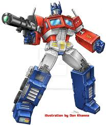

The Transformers are a race of alien, shape-shifting robotic life-forms from the planet
Cybertron. The planet was torn apart by the warring of two factions: the Heroic Autobots,
and the Evil Decepticons. Both factions came to earth to seek the energy to restore their home.
Having awoken in the present day and taking the alternate modes of Earthen vehicles and objects,
the Transformers resumed their conflict... as Robots in Disguise!
Autobot Profiles
The Heroic Autobots stand in the way of the Decepticons' goal of conquest! Fighting for freedom and justice,
these valiant Cybertronians will never waver in the protection of innocent life - human, Cybertronian, or otherwise!

Optumus Prime
Optimus Prime is the wisest, strongest, and most noble Autobot of all. He act as the Supreme Commander,
and wholeheartedly believes that freedom is the right of all sentient beings - no exceptions! He
treats the other members of his team as he would his friends, for while he is their leader, he is also
their friend. He is armed with an Ion Blaster and an Energon Axe. Inside his chest, he carries the Matrix
of Leadership, the symbol of his rank. But despite his high status, he had humble origins: he was once a
data clerk named Orion Pax. After he was wounded by Megatron at the start of the Great War, the Autobot
sage, Alpha Trion, rebuilt him with the Matrix inside him, turning him into Optimus Prime. He can split into
3 separate modules: the tractor unit of his semitruck alternate mode becomes Optimus Prime himself, the brain of the trio.
Inside his trailer is Roller, a scout car who can operate up to 1200 miles away. The trailer itself becomes Autobot Headquarters, a combat
deck equipped with computers and an artillery/mechanic robot. The only weakenss of this trio is that if one module is injured,
the other two will share the pain.
Bumblebee
Bumblebee is the smallest of the Autobots, but he's got a big heart. His small size is
easily underestimated by the Decepticons, for while he's not the strongest in terms of physical
strength or firepower, his small size makes him an expert at espionage missions. He desires to be
respected by the other Autobots, and idolizes them, especially Optimus Prime. However, he fails to
realize that the other Autobots look up to him just as much as he looks up to them, and that he already
is respected - after all, Bumblebee does better at espionage than most other Autobots could be. He's also friendly, and ready to befriend anyone, especially humans, two of them in particular being Sparkplug Witwicky
and his son, Spike.
Prowl
Prowl is the Autobots' military strategist. His logical processes are more acute than
most other Autobots', and he functions as Optimus Prime's second-in-command. He always
strives to find a logical reason for everything, so it shouldn't be too surprising that he's
hesitent to believe in things like ghosts.